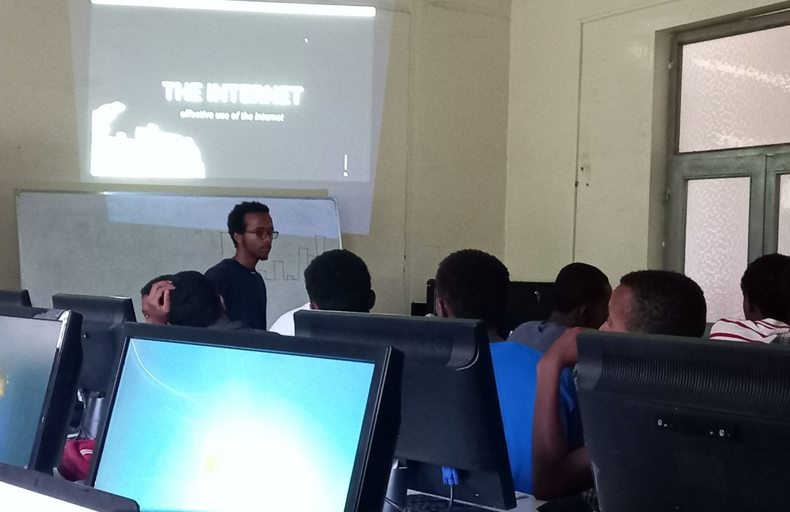
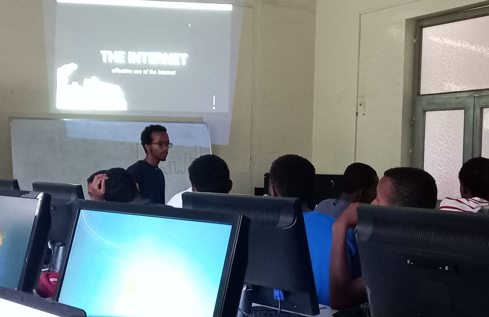

STEM Power
For more than a decade, STEMpower founders have been implementing many successful STEM programs (Science, Technology, Engineering, and Math) in Ethiopia and nearby countries. Pre-university students learn through our hands-on labs, engaging them towards advanced STEM study and careers. STEM enrichment programs bridge genders and ethnicity, fostering peace and development within and among nations..
I had the fortunate opportunity to volunteer as a mentor at the Science and Engineering Fair (SEF) held at the Foka STEM Center in 2022 and 2023. My role involved teaching participants how to build for the web and guiding them through the process of creating web applications to perform computations and solve real-world problems.
The Program, Foka STEM Center
STEM Centers are specialized learning facilities that offer hands-on engineering lab experience. Local-area students voluntarily and eagerly enroll in various age-appropriate programs offered by the STEM Centers, at no cost to the students. Lab mentors guide the students, to accessing modern scientific equipment in a comfortable setting. The Centers also serve as venues for local gatherings and regional Science Fairs..
At Foka STEM Center, students have access to supplementary programs such as touch typing, Rubik's cube solving, and chess competitions. These activities complement the core curriculum, which focuses on addressing real-world problems through STEM education.
Initially, students learn the fundamentals of programming, followed by engaging in research to identify issues that they then tackle using their newly acquired skills.
My Role, Web Based Projects
Initially, students learn the fundamentals of programming, followed by engaging in research to identify issues that they then tackle using their newly acquired skills.
If their project is web-based, we provide comprehensive resources for learning web development, including HTML, CSS, JavaScript, and Node.js. We guide them through their projects from start to finish, starting with problem identification and solution design. We help them create a Minimum Viable Product (MVP), review their progress, assign exercises, and conduct thorough testing, ensuring they successfully build and refine their projects.
Events, PIA Day & Sessions
 

PIA Day, March 25th 2023
The goal of the event was to inspire our attendees enough to explore Processing, Arduino, and the Internet of Things on their own and to understand how each of these technologies, including their combination, can be implemented in the real world. I chose to build Conway's Game of Life using Processing with the students. I selected this project due to its simple rules, interesting outcomes, and visually engaging results. It provided a good opportunity to dive into algorithms and rendering techniques on a canvas, while also allowing students to interact and experiment with the code, enhancing their understanding of programming concepts.
Sessions, Effective use of the Internet
In this session, students focused on advancing their projects, which involved writing code and troubleshooting numerous bugs. To address these challenges effectively, they learned how to utilize the internet efficiently. This included understanding how to use search engines with appropriate keywords and operators such as "filetype:". They also explored valuable forums like Stack Overflow, Quora, and Reddit, along with leveraging AI tools to find solutions and enhance their problem-solving skills.
It was rewarding to see students learn and evolve, witnessing firsthand how even a two-month period could significantly impact their lives. The experience at Foka STEM Center is invaluable, and it is an honor to be a part of such a transformative journey.
STEM Power,
Foka Community,
Game of Life - Processing Version,
PAI Day,